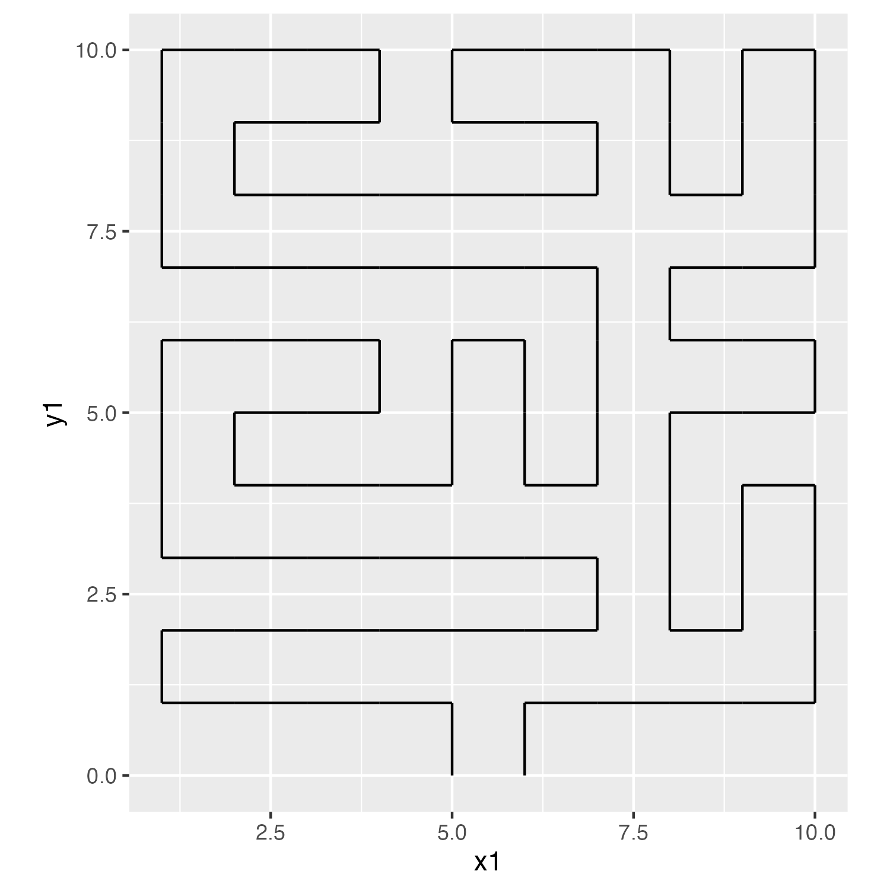

This art project came out of my experiences during the pandemic. I thought the signs on grocery store floors were an interesting physical manifestation of the COVID rules. Especially since some places had clear signs but some didn’t, some people followed the signs but some didn’t, and some signs were consistent for a long time but some weren’t. This same situation is reflected in the other rules where some are clear, followed, and consistent, but others aren’t.
So I decided to make a generative art project that creates random paths based on pandemic signs. For each image created, the maze generated has the same start and endpoints, but the path in between can be complicated or straightforward. On one end of the spectrum, the maze follows mostly straight lines into the middle and then back out of the maze with consistent signage. The other end has the maze meander all over with many different signs. There’s a parameter for all of this code that causes that. Changes in this parameter can express experiences or match data for different regions/times.
The program works in five steps:
Create a base maze
Update the maze to double all the edges
Move through all edges in one path
Add in the images for signs
Finally, add the background and save
Create a base maze
A five-by-five square of nodes sets up each maze. A data set of edges connect the vertical and horizontal neighbors. The set for the labyrinth is marked here. The maze always starts at the bottom middle node. After that, edges are selected, checked if they can be included or if it would cause the maze to connect in on itself, and marked as part of the maze or as discard.
A parameter ranging from 0 to 1 determines how much the maze turns. A value of 0 yields a completely random maze and 1 for following a smooth labyrinth that spirals in and then back out to the start. Any value in between sets the probability of choosing a new step at random versus moving along the labyrinth.
[get_maze function]
get_maze <-function(structure_parameter) {# Sets up base data set of potential edges for the maze# size is always 5 for right now size <-5 edges <-CJ(x1 =rep(seq(1, size), 2),y1 =seq(1, size) ) edges[, ":="(x2 =ifelse(.I %%2==0, x1 +1, x1),y2 =ifelse(.I %%2==1, y1 +1, y1))] edges <- edges[x2 <= size & y2 <= size, ] edges[, id :=seq(1, nrow(edges))] edges[, ":="(node1 = (x1 -1) * size + (y1 -1) +1,node2 = (x2 -1) * size + (y2 -1) +1)]setkey(edges, id)# Set up the path for the labyrinth edges[, labyrinth :=0] edges[ .(c(20, 29, 37, 38, 39, 40, 36, 27, 18, 9, 7, 5, 3, 1, 2, 10, 12, 14, 17, 26, 32, 30, 22, 21)), labyrinth :=seq(1, 24) ]# data set of nodes nodes <-unique(rbind(edges[, .(id = node1)], edges[, .(id = node2)])) nodes[, connected :=0]setkey(nodes, id)# data set of node id to edge ids nodes_edges <-unique(rbind(edges[, .(id = node1, edge = id)][], edges[, .(id = node2, edge = id)]))setkey(nodes_edges, id)# location : 1 for maze, 0 for frontier, -1 for uncharted, -2 for discarded# starting point : bottom middle# include bottom middle then either off to the sides or upif (runif(1, 0, 1) <= structure_parameter) { starting_edge <- edges[x1 ==3& y1 ==1& x2 ==4& y2 ==1, ] } else { starting_edge <- edges[(x1 ==3& y1 ==1) | (x1 ==2& y1 ==1& x2 ==3& y2 ==1), ][sample(.N, 1), ] }# Set up base columns edges[, ":="(location =-1,probability =0)] edges[.(starting_edge$id), ":="(location =1,probability =0)] nodes[.(c(starting_edge$node1, starting_edge$node2)), connected :=1] edges[.(nodes_edges[.(c(starting_edge$node1, starting_edge$node2)), "edge"]), ":=" (location =fifelse(location ==-1, 0, location),probability =fifelse(location ==-1, 1, probability))]#### Loop through maze generation ---- num_edges <-1while (num_edges < (size^2-1)) {# select next edgeif (runif(1, 0, 1) <= structure_parameter) { selected_edge <- edges[edges$location ==0, ][max(labyrinth) == labyrinth, ][sample(.N, 1), ] } else { selected_edge <- edges[sample(.N, 1, prob = probability), ] }## if it's good, then# add it to the maze# add connecting edges to the frontier# else add it to discardif (any(nodes[.(c(selected_edge$node1, selected_edge$node2)) , connected] ==0)) {# add to maze edges[.(selected_edge$id), ":="(location =1,probability =0)]# update nodes nodes[.(c(selected_edge$node1, selected_edge$node2)), connected :=1]# update frontier edges[.(nodes_edges[.(c(selected_edge$node1, selected_edge$node2)) , "edge"]), ":=" (location =fifelse(location ==-1, 0, location),probability =fifelse(location ==-1, 1, probability))] num_edges <- num_edges +1 } else {# drop from frontier edges[.(selected_edge$id), ":="(location =-2,probability =0)] } }return(edges[location ==1, ])}
The following image displays the base maze layout. The edges are numbered with their x1/y1 coordinates at their left/bottom and x2/y2 at their right/top. The labyrinth pattern is highlighted in blue.
Maze edges with labyrinth highlighted
Update the maze to double all the edges
For the final image, the path needs to start at one point, move through all the nodes, then exit at one other point. To ensure this capability, the path will travel through the maze and backtrack to the starting point. This is typically done using a graph setup, but I wanted to keep the table data structure. So instead of following those instructions, I take every edge and double for each direction. The code works by replacing all possible edges with either two parallel edges (if the edge was in the maze) or two perpendicular ones (if the edge was discarded).
[update_maze function]
update_maze <-function(edges) {# list out all possible edges# (basically same code as setting up the maze)# plus adds edges that stick out on the outside all_possible_edges <-CJ(x1 =rep(seq(1, 6), 2) -1,y1 =seq(1, 6) -1 ) all_possible_edges[, ":="(x2 =ifelse(.I %%2==0, x1 +1, x1),y2 =ifelse(.I %%2==1, y1 +1, y1))] all_possible_edges <- all_possible_edges[(x1 !=0| x2 !=0) & (y1 !=0| y2 !=0), ] edges <- edges[, .(x1, x2, y1, y2, id)]# merge maze and all possible edges to see which ones weren't used all_possible_edges <-merge(all_possible_edges, edges,by =c("x1", "y1", "x2", "y2"),all.x =TRUE )# This function subs in the new edges appropriately# basically, any path edge needs to be updated to two edges so the maze# starts at the bottom middle, travels through the maze, and back to the start create_new_edges <-function(x1, y1, x2, y2, id) {# if no edges, add blockif (is.na(id)) {if (y1 == y2) { # horizontal edgelist(x1_1 =2* x1,y1_1 =2* y1 -1,x2_1 =2* x1,y2_1 =2* y1,x1_2 =2* x2 -1,y1_2 =2* y2 -1,x2_2 =2* x2 -1,y2_2 =2* y2 ) } else { # vertical edgelist(x1_1 =2* x1 -1,y1_1 =2* y1,x2_1 =2* x1,y2_1 =2* y1,x1_2 =2* x2 -1,y1_2 =2* y2 -1,x2_2 =2* x2,y2_2 =2* y2 -1 ) } } else { # has edge, add connectionsif (y1 == y2) { # horizontal edgelist(x1_1 =2* x1,y1_1 =2* y1 -1,x2_1 =2* x2 -1,y2_1 =2* y2 -1,x1_2 =2* x1,y1_2 =2* y1,x2_2 =2* x2 -1,y2_2 =2* y2 ) } else { # vertical edgelist(x1_1 =2* x1 -1,y1_1 =2* y1,x2_1 =2* x2 -1,y2_1 =2* y2 -1,x1_2 =2* x1,y1_2 =2* y1,x2_2 =2* x2,y2_2 =2* y2 -1 ) } } }# fill in blocks and paths all_possible_edges[, c("x1_1", "y1_1", "x2_1", "y2_1","x1_2", "y1_2", "x2_2", "y2_2" ) :=create_new_edges(x1, y1, x2, y2, id), by =seq_len(nrow(all_possible_edges)) ]# clean everything up all_possible_edges[, ":="(x1 =NULL,y1 =NULL,x2 =NULL,y2 =NULL,id =NULL)] all_possible_edges <-melt(all_possible_edges,measure.vars =patterns("x1", "y1", "x2", "y2"),value.name =c("x1", "y1", "x2", "y2") )[, variable :=NULL] all_possible_edges <- all_possible_edges[(x1 >0& y1 >0& x2 <11& y2 <11) & (x1 !=5| y1 !=1| x2 !=6| y2 !=1), ] all_possible_edges <-rbind( all_possible_edges,data.table(x1 =c(5, 6),y1 =c(0, 0),x2 =c(5, 6),y2 =c(1, 1) ) )}
The following two images show a randomly generated maze and output for doubling the edges. The image on the left has the maze in red with all possible edges in blue. Note the extra blue edges are pointing out of the original five-by-five square. These will provide the walls for paths on the maze’s outside edge. The image on the right displays the result of substituting every edge with a parallel set for maze edges and a perpendicular set for non-maze edges. So, each red line has two new black lines running next to it, while each blue line has two new black lines cutting through it. Note that the coordinates’ ranges have changed from one to five to zero to eleven (everything is times two then minus one).
Randomly generated maze
Doubling maze edges
This image shows the cleaned-up final output for this function. The unconnected outside edges are removed. The start and end edges are added to the bottom middle with the connection between them severed.

Cleaned-up output
Move through all edges in one path
Now, the edges from the previous step can be connected into one path. The path starts at the bottom middle and then moves to the next node. After that, the path connects to the unconnected node. Because of the previous setup, each node (except starting and end ones) connects to exactly two other nodes. So, we don’t have to worry about hitting dead ends.
[maze_to_path function]
maze_to_path <-function(edges) {# set up id edges[, id := .I]setkey(edges, id)# set up nodes data set nodes <-unique(rbind(edges[, .(x = x1, y = y1)] , edges[, .(x = x2, y = y2)])) nodes[, id := .I]setkey(nodes, id)# add node ids to edges data set edges <-merge(edges, nodes,by.x =c("x1", "y1"), by.y =c("x", "y"),suffixes =c("", "_node_1"), all.x =TRUE ) edges <-merge(edges, nodes,by.x =c("x2", "y2"), by.y =c("x", "y"),suffixes =c("", "_node_2"), all.x =TRUE )# nodes to edges look up table nodes_edges <-unique(rbind( edges[, .(id = id_node_1, edge = id, connecting_node = id_node_2)], edges[, .(id = id_node_2, edge = id, connecting_node = id_node_1)] ))setkey(nodes_edges, id)# save spot for path path <-vector(mode ="numeric")# variables to keep track of progress through the mase last_node <- nodes[y ==0& x ==5, id] current_node <- nodes[y ==0& x ==6, id]# update path path <-append(path, current_node) previous_node <- current_node# keep going to unexplored nodes current_node <- nodes_edges[.(current_node), ][connecting_node != previous_node , connecting_node]# continue through the whole pathwhile (length(current_node) >0) { path <-append(path, current_node) future_node <- nodes_edges[.(current_node), ][connecting_node != previous_node , connecting_node] previous_node <- current_node current_node <- future_node } path <-data.table(order =seq(1, length(path)),node = path ) path <-merge(path, nodes, by.x =c("node"), by.y =c("id"))}
Add in the images for signs
Creating the signs takes place before creating the maze. Each image name has three parts: sign, course, and direction. The sign contains essential information on what the image is. The course is how the path moves (straight, turn right, etc.). Direction is where the path is coming from (east, north, etc.).
[first part of create_signs code]
library(data.table)library(ggplot2)# do not enterggplot() +geom_polygon(aes(x =cos(seq(0, 2* pi, pi /4) + pi /8) *1.082,y =sin(seq(0, 2* pi, pi /4) + pi /8) *1.082 ), color ="#90091E", fill ="#90091E") +geom_text(aes(x =0, y =0, label ="DO NOT\nENTER"), color ="white", size =3) +scale_x_continuous(limits =c(-1, 1)) +scale_y_continuous(limits =c(-1, 1)) +theme_void() +coord_equal()ggsave(paste0("signs/do_not_enter_straight_south.png"),height =1,width =1)
We’ll need to determine how the path moves and which images display that to add the images. Using information from the previous and next steps, we can determine which direction the path moves and whether it turns or stays straight. This data can be paired with information from the image names to choose images that fit in the maze.
For each node on the path, several images could work. So, we select one at random from a bag. A parameter determines the number of available images in the bag. A value of 0 has all possible images on each draw. A value of 1 only yields one image for each course (straight vs. turn).
[get_image_data function]
get_image_data <-function(path, structure_parameter) {# Set up variables used to determine which images can be used path <- path[order(order), ] path[, ":="(previous_x =shift(x, type ="lag"),previous_y =shift(y, type ="lag"),next_x =shift(x, type ="lead"),next_y =shift(y, type ="lead"))] path[, ":="(course =fifelse( previous_x == next_x | previous_y == next_y, "straight",fifelse((y > previous_y & next_x > x) | (x > previous_x & next_y < y) | (y < previous_y & next_x < x) | (x < previous_x & next_y > y), "right", "left") ),direction =fifelse( x < next_x, "east",fifelse( y < next_y, "north",fifelse( x > next_x, "west","south" ) ) ))]# set up bag to hold the images bag_pull <-function(this_course, this_direction, bag) { bag[course == this_course & direction == this_direction, ][sample(.N, 1), file] }# fill bag bag <-data.table(file =list.files("signs", full.names =TRUE)) bag <- bag[file !="signs/do_not_enter_straight_south.png", ] bag[, c("sign", "direction") :=tstrsplit(gsub("signs/|.png", "", file), "_(?!.*_)", perl =TRUE)] bag[, c("sign", "course") :=tstrsplit(sign, "_(?!.*_)", perl =TRUE)] bag[, ":="(sub_course =fifelse(course =="straight", "straight", "turn"))]# filter down to a smaller amount if the structure_parameter is large bag_subset <-unique(bag[, c("sign", "sub_course")]) bag_subset <-unique(bag_subset[ , .SD[sample(.N, ceiling( (1- (structure_parameter)^(1/4)) * (.N -1) +1))] , by = sub_course][, c("sign", "sub_course")]) bag <-merge(bag, bag_subset, by =c("sign", "sub_course"))# add images from bag path[, image :=bag_pull(course, direction, bag), by =seq_len(nrow(path))]# Start and end path[y ==0& x ==6, image :="signs/wait_here_straight_north.png"] path[y ==0& x ==5, image :="signs/do_not_enter_straight_south.png"]}
Finally, add the background and save
After setting up the appropriate images, we only need to add a background. The background works by stacking small gray rectangles of various sizes with a low alpha value. This is supposed to resemble a grocery store floor.
[final code]
library(data.table)library(ggplot2)library(ggimage)source("get_maze.R")source("update_maze.R")source("maze_to_path.R")source("get_image_data.R")set.seed(1)for (structure_parameter inseq(0, 1, by = .25)) {for (num in1:2) { edges <-get_maze(structure_parameter) edges <-update_maze(edges) path <-maze_to_path(edges) path <-get_image_data(path, structure_parameter)# set up background floor floor <-CJ(x =seq(.5, 10.5, length.out =360),y =seq(-.5, 10.5, length.out =360) ) floor[, color :=sample(c(seq(5, 9), c("A", "B", "C", "D", "E", "F")), 1), by =seq_len(nrow(floor)) ] floor[, color :=paste0("#", color, color, color, color, color, color)] floor[, ":="(xmin = x -runif(1, 0, .25),ymin = y -runif(1, 0, .25),xmax = x +runif(1, 0, .25),ymax = y +runif(1, 0, .25)), by =seq_len(nrow(floor)) ]ggplot() +geom_rect(data = floor,aes(xmin = xmin, ymin = ymin,xmax = xmax, ymax = ymax,fill = color ),color =NA,alpha = .01 ) +scale_fill_identity() +geom_image(data = path,aes(x, y, image = image) ) +theme_void() +theme(aspect.ratio =1)ggsave(paste0("output/image_", structure_parameter *100, "_", num, ".jpeg"),width =8,height =8,bg ="#F3F3F3" ) }}